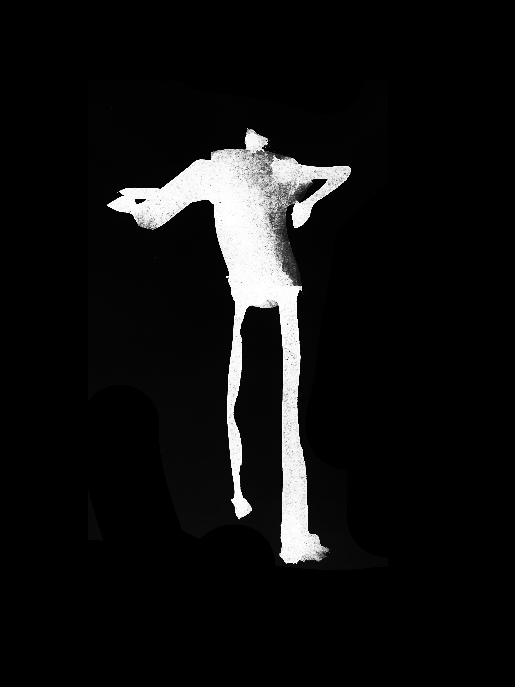
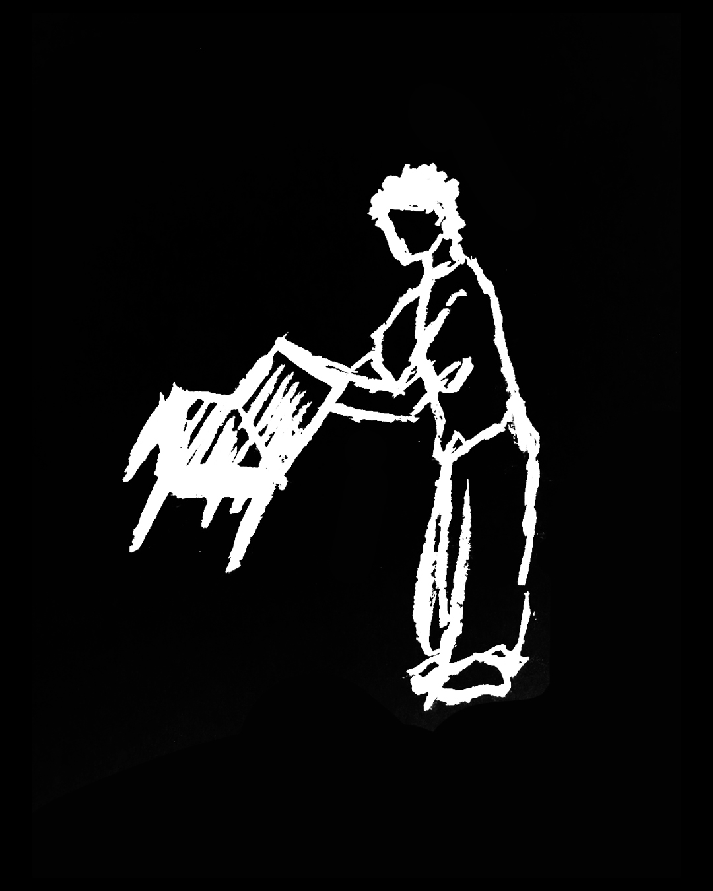
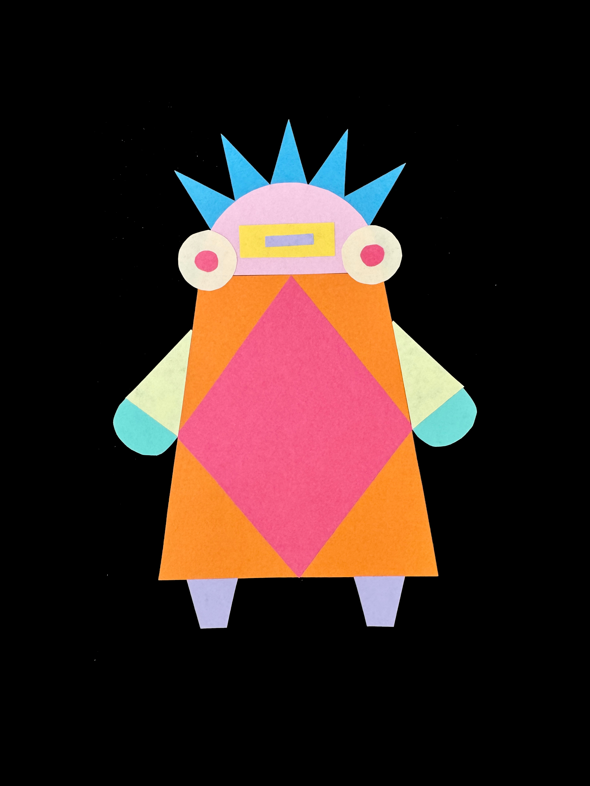
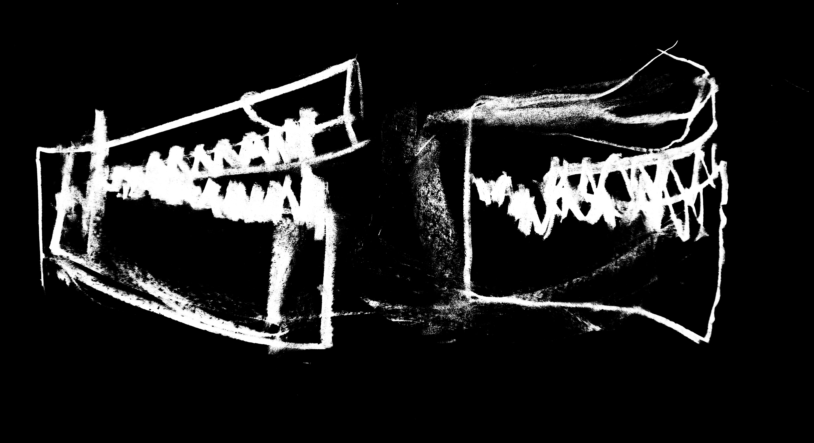

CURADOR.IA · Lucía Romo · Diseño LDI26
Haz visible cómo
piensas, decides y creas.
CURADOR.IA reúne bocetos, mapas, textos, pruebas, videos, audios y decisiones de cada materia en un archivo longitudinal. La IA ayuda a curar la evidencia; Lucía conserva la autoría.
PROCESO HUMANO87evidencias acumuladas
PROYECTOS18en distintas materias
ADN EMERGENTE10patrones en observación
ARCHIVO VISUAL · LUCÍA ROMO
Todo el proceso en una sola retícula.
No es una galería de entregables. Es una mezcla de imágenes, frases, videos, audio, mapas, bocetos y textos que hacen visible cómo evoluciona una idea.
“No quería diseñar una joya. Quería diseñar una relación incómoda entre el cuerpo y el territorio.”

“Cuando el material respondió distinto a lo que esperaba, el proyecto empezó a ser mío.”
Audio · reflexión de campo

“Dibujar no fue representar la idea; fue descubrir qué idea tenía.”

Todavía no hay evidencias visibles para esta materia en la maqueta.
Nueva entrada
Documentar un proyecto
La unidad básica no es el archivo: es el proyecto + su proceso.
Catálogo LDI26 cargado por semestre. Cada proyecto queda ligado a una unidad de formación para construir la trazabilidad de la trayectoria completa.
PROCESO HUMANO
Sube evidencia, no sólo entregables
Bocetossketches, thumbnails
Mapasconceptos, sistemas
Textosnotas, bitácora
Pruebasprototipos, errores
Contextocampo, materiales
Reflexionesqué cambió y por qué
Arrastra aquí tu proceso
o
Imágenes · PDF · texto · documentos
CURADOR IA · BORRADOR
Lo que parece importante conservar
- La decisión corporal: rodilla como punto de partida.
- La fricción entre ornamento y movimiento.
- La primera pieza que no funcionó.
- El contraste entre variantes digitales y prueba física.
La IA sugiere qué evidencia cuenta mejor tu proceso. Tú decides qué entra.
METADATA
cuerpomaterialidadfricciónprototipadoagencia
autoría_humana: alta · uso_ia: expansión · evidencia_física: sí · reflexión: sí
MAPA CURRICULAR · LUCÍA ROMO
Materias como puertas de entrada al proceso.
Cada materia abre su propio archivo: proyectos, evidencias, frases, reflexiones y patrones de ADN asociados.
01
Germinar
02
Observar
03
Explorar
04
Contrastar
05
Profundizar
06
Expandir
07
Reconocer
08
Materializar
SEMESTRE 03 · DL1001B
Estudio de diseño I
Archivo de procesos, proyectos y evidencias desarrolladas dentro de esta unidad de formación.
HUELLA EN EL ADN
Patrones relacionados
experimentacióncuerpofriccióniteración
CAPACIDADES DESARROLLADAS
ExperimentaciónConceptualizaciónPrototipadoCriterio de diseñoPensamiento crítico
“Una decisión de proceso puede explicar mucho más que una imagen final.”
CURADOR.IA · INTROSPECCIÓN
Preguntas que ayudan a reconocer cómo creas.
Aquí la IA no define tu identidad. Te devuelve preguntas para que tú reconozcas decisiones, tensiones, patrones y cambios en tu propia práctica.
PREGUNTA ACTIVA
¿Qué decisión de este proyecto sientes que fue verdaderamente tuya?
Inspirado en una lógica socrática de acompañamiento: preguntar antes de concluir.
LECTURA DE LA REFLEXIÓN
CURADOR.IA no responde por ti.
Puede detectar temas recurrentes y devolverte hipótesis para validar, cuestionar o descartar.
autoría
criterio
fricción
aprendizaje
IA
HISTORIAL DE INTROSPECCIÓN
“¿Qué cambió después de equivocarte?”
La primera pieza falló al doblarse. En lugar de corregirla de inmediato, mantuve esa deformación y la convertí en parte del lenguaje del objeto.
fricciónexperimentaciónRECURSO EXTERNO
También puedes continuar una sesión de preguntas en Preguntadora Serial.
Abrir Preguntadora Serial ↗SKILL ATLAS · LUCÍA ROMO
Lo que Lucía puede demostrar.
Los proyectos son la evidencia. Las capacidades son lo que la estudiante demuestra. El ADN creativo es la manera particular en que combina esas capacidades.
CONSOLIDANDO
Experimentación
Aprender haciendo, probando y equivocándose.
9
proyectos con evidencia
CONSOLIDANDO
Criterio de diseño
Distinguir qué tiene calidad, pertinencia y sentido.
12
proyectos con decisiones trazadas
DESARROLLANDO
Problem framing
Encontrar y formular el verdadero problema.
7
proyectos
DESARROLLANDO
Interacción con IA
Dialogar, iterar y construir procesos con IA.
8
procesos humano–IA
DESARROLLANDO
Autoría
Reconocer qué aporta humano, IA y otras fuentes.
15
proyectos trazables
EXPLORANDO
Pensamiento de futuros
Imaginar escenarios y anticipar cambios.
3
proyectosIDENTIDAD EMERGENTE · LUCÍA ROMO
Constelación de ADN creativo
Las palabras no son etiquetas fijas. Son patrones que emergen de bocetos, decisiones, pruebas, errores, textos y reflexiones acumuladas a lo largo de la carrera.
LUCÍA ROMO
ADN
CREATIVO
CREATIVO
identidad en construcción
PATRÓN SELECCIONADO
Materialidad
La materia aparece como herramienta de investigación: probar, tocar, deformar y fabricar cambia la dirección conceptual.
EVIDENCIA RELACIONADA8proyectos / procesos con señales vinculadas
LECTURA DEL CURADOR IA
Una hipótesis sobre Lucía
Su identidad parece construirse menos desde un “estilo visual” y más desde una forma de proceder: experimentar físicamente, aceptar fricción, observar el cuerpo y usar la materialidad para pensar.
Esta lectura no es definitiva. Lucía puede validar, rechazar o reformular cada patrón.
LECTURAS EXTERNAS · PROFESORADO
“Veo una recurrencia que quizá todavía no nombras: utilizas el dibujo para pensar antes de explicar.”
Dibujo y expresión gráfica · observación docente · pendiente de tu reflexión
“La fricción no aparece solamente como problema; varias veces decides conservarla.”
Métodos creativos · observación docente · pendiente de tu reflexión
Estas observaciones no modifican tu ADN automáticamente. Funcionan como señales externas que puedes validar, cuestionar o relacionar con evidencia.
FRASE DE IDENTIDAD · BORRADOR
“Diseño desde la experimentación material y corporal, usando la fricción como una forma de descubrir posibilidades.”
IA como habilitador
Curar sin borrar la complejidad
La IA no decide quién eres. Recupera evidencia, conecta recurrencias y te pregunta si esas recurrencias realmente te representan.
Patrones candidatos
Diseño desde la fricción
Aparece en 4 proyectos. ¿Elección personal o condición del brief?
Cuerpo como herramienta de investigación
Aparece en 6 evidencias entre bocetos, pruebas y textos.
Materialidad antes que acabado
La prueba material cambia la dirección conceptual.
PREGUNTA DEL CURADOR
¿Qué de esto te pertenece?
Detecto que conviertes restricciones físicas en parte del concepto. ¿Quieres que busque evidencia de ese patrón en proyectos anteriores?
CURADOR.IA · PERFIL VIVO
LUCÍA ROMO · DISEÑO LDI26
Diseño desde el cuerpo, la materia y la fricción.
Lucía construye su práctica mediante experimentación física, observación del cuerpo y decisiones que transforman restricciones en posibilidades de diseño.
Misma evidencia. Distinta curaduría según audiencia.
PROYECTO COMO EVIDENCIA DE PRÁCTICA
Portar el territorio
INTENCIÓN
Explorar cómo una pieza puede portar una memoria material del desierto y modificar la relación con el cuerpo.
DECISIÓN CLAVE
Trabajar desde la rodilla para que el objeto condicionara el movimiento en lugar de ser solamente ornamental.
FRICCIÓN
La primera geometría impedía caminar. La dificultad se convirtió en parte del concepto.
RESPUESTA
La forma se ajustó después de pruebas físicas, sin eliminar por completo la incomodidad que daba sentido al proyecto.
CAPACIDADES DEMOSTRADAS
ExperimentaciónPrototipadoCriterio de diseñoAutoría
HUELLA EN SU ADN
materialidadcuerpofriccióniteración
LO QUE PUEDE DEMOSTRAR
Capacidades sustentadas por evidencia
Criterio de diseño12 proyectos31 decisiones documentadas
Experimentación9 proyectos46 evidencias de iteración
Problem framing7 proyectos11 reformulaciones registradas
Interacción con IA8 proyectos19 procesos humano–IA trazables
Autoría15 proyectosContribución humana, IA y colaboración diferenciadas
MATERIALIDAD
La materia como pensamiento
Las pruebas materiales cambian decisiones conceptuales; no aparecen solamente al final como acabado.
CUERPO
El cuerpo como territorio de prueba
Escala, movimiento, restricción y experiencia aparecen repetidamente como detonadores del diseño.
FRICCIÓN
No eliminar la dificultad demasiado pronto
Lucía convierte contradicciones y fallas en parte de la investigación.
AGENCIA
La herramienta expande; Lucía decide
La IA aparece como apoyo para explorar y contrastar, mientras la decisión se mantiene trazable.
TRAZABILIDAD DE AUTORÍA
Cómo se construyó el trabajo
HUMANOIntención, criterio, selección, pruebas, decisión final.
IAExpansión de alternativas, comparación y diálogo.
COLABORACIÓNFeedback, fabricación y discusión con otras personas.
CONTEXTOMateriales, cuerpo, territorio y restricciones reales.
EVIDENCIA HUMANA
6 bocetos · 3 prototipos · 1 descarte documentado · 2 reflexiones · 1 registro de campo · 4 decisiones justificadas.
CMS DOCENTE · ESTUDIANTES
Acompañar sin definir la identidad.
La vista docente permite observar trayectorias, hacer visibles patrones que el estudiante quizá todavía no reconoce y dejar feedback vinculado a evidencia. La lectura del profesor entra como una señal externa, no como una definición automática del ADN.
GRUPO · PRIMER SEMESTRE
Lucía Romo
24 evidencias · 5 reflexiones · 4 señales de ADN · 2 observaciones docentes pendientes
Mateo Salas
19 evidencias · 3 reflexiones · 3 señales emergentes
Ana Sofía Luna
31 evidencias · 7 reflexiones · 6 señales emergentes
QUÉ OBSERVAR
No sólo el resultado.
Busca decisiones, recurrencias, contradicciones, formas de investigar, maneras de equivocarse y relaciones entre materias.
Posible punto ciegoLucía documenta mucho el hacer, pero poco qué criterio usa para descartar.preguntar
Patrón emergenteDibujo + cuerpo aparecen juntos en tres evidencias distintas.observar
CMS DOCENTE · REVISAR PROCESO
Lucía Romo
Materia activa: Dibujo y expresión gráfica. El feedback se vincula a una evidencia concreta y puede alimentar capacidades, introspección o hipótesis de ADN.
EVIDENCIA SELECCIONADA
Exploración objeto–humano
dibujocuerpoiteración
Lucía registra cambios de proporción y postura antes de decidir la relación final entre objeto y cuerpo.
DAR FEEDBACK
¿Qué estás viendo que quizá Lucía no ve?
El estudiante podrá aceptar, cuestionar o relacionar esta lectura con otras evidencias.
CMS DOCENTE · LECTURA DEL ADN
Dos miradas sobre una misma práctica.
El valor no está en que el profesor “corrija” el ADN, sino en contrastar la autopercepción de Lucía con una lectura externa fundamentada en evidencia.
LO QUE LUCÍA RECONOCE
Autopercepción
materialidadcuerpoexperimentacióniteración
Lucía dice:
“Siento que entiendo las ideas cuando comienzo a probarlas físicamente.”
LO QUE EL PROFESOR OBSERVA
Lectura externa
dibujofricciónsensibilidad
Profesor observa:
El dibujo aparece antes de varias decisiones importantes. Quizá es una herramienta de pensamiento más central de lo que Lucía reconoce.
ZONA DE CONTRASTE
Lo interesante está en la diferencia.
DIBUJO · señal externa3 materias muestran dibujo como forma de investigar, no sólo de comunicar.Lucía aún no lo valida
FRICCIÓN · coincidencia parcialLucía reconoce experimentación; el profesor observa que frecuentemente conserva errores productivos.abrir introspección
CMS DOCENTE · FEEDBACK
Historial de lecturas externas.
Cada comentario conserva contexto, evidencia y autoría. Ningún comentario docente se convierte directamente en ADN: entra al sistema como señal para contrastar.
FEEDBACK ENVIADO
Veo
El dibujo aparece como una manera de descubrir relaciones antes de resolver la forma final.
Me pregunto
¿Qué sucede cuando decides conservar un error en lugar de corregirlo?
PRINCIPIO DOCENTE
Hacer visible, no etiquetar.
La retroalimentación docente puede ampliar el campo de visión del estudiante. Debe apuntar a evidencias, formular hipótesis y abrir preguntas, no fijar una identidad.
FlujoProfesor observa → señala evidencia → estudiante reflexiona → CURADOR.IA busca recurrencias → estudiante valida o cuestiona.